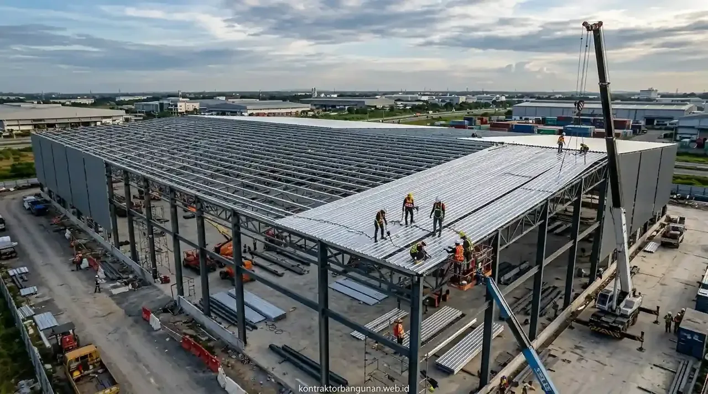

Mana yang Lebih Ekonomis Secara Total Biaya Antara Gudang Struktur Baja dan Beton?
Perhitungan akumulasi biaya total konstruksi membuktikan bahwa gudang struktur baja vs beton lebih ekonomis pada rangka baja untuk skala industri menengah hingga besar karena mempercepat durasi operasional bisnis.
Secara biaya awal pembelian bahan mentah, beton bertulang sering kali nampak lebih murah di pasaran. Namun, pengerjaan beton membutuhkan masa pengeringan bekisting (curing) yang memakan waktu berbulan-bulan, menambah biaya upah tukang harian, serta memperlama waktu sewa alat berat di lokasi proyek.
Sebaliknya, struktur baja profil seperti H-Beam dan IWF diproduksi secara terstandarisasi di bengkel fabrikasi dengan tingkat akurasi tinggi. Begitu pondasi selesai dicor, rangka baja dapat langsung dirakit dengan sistem sambungan baut mutu tinggi (high-strength bolts) dan pengelasan profesional. Kecepatan ini memungkinkan fasilitas pergudangan Anda mulai beroperasi dan menghasilkan arus kas berbulan-bulan lebih awal.
| Parameter Evaluasi Ekonomis | Gudang Struktur Baja | Gudang Beton Bertulang |
|---|---|---|
| Kecepatan Perakitan Fisik | Sangat Cepat (Fabrikasi Pabrik & Perakitan Site) | Lambat (Pengecoran Basah & Masa Pengeringan Site) |
| Kemampuan Bentang Lebar | Sangat Baik (> 30 Meter Tanpa Kolom Tengah) | Terbatas (Membutuhkan Banyak Kolom Penopang) |
| Berat Beban Struktur | Lebih Ringan (Hemat Biaya Pondasi & Tiang Pancang) | Sangat Berat (Membutuhkan Pondasi Dalam Masif) |
| Nilai Sisa Aset (Resale Value) | Tinggi (Dapat Didaur Ulang, Dibongkar & Dijual) | Rendah (Biaya Pembongkaran/Demolisi Mahal) |
| Ketahanan Api & Korosi | Perlu Coating Pelindung Tambahan (Intumescent/Epoxy) | Tahan Api & Korosi Secara Alami |
Kombinasi bobot yang lebih ringan dan masa instalasi yang singkat menjadikan struktur baja sebagai pilihan utama para pengembang kawasan logistik modern di Indonesia. Pengurangan beban mati secara langsung menurunkan volume galian tanah dan jumlah titik tiang pancang pondasi, sehingga menghemat biaya konstruksi bawah tanah (substructure) hingga 15–20%.
- ROI Lebih Cepat: Dengan waktu konstruksi 3–4 bulan lebih singkat, gudang baja memungkinkan penyewa atau pemilik bisnis memulai aktivitas pergudangan lebih awal, mempercepat perputaran modal usaha.
- Nilai Sisa Tinggi: Material baja struktural memiliki nilai jual kembali (scrap/resale value) yang tinggi jika sewaktu-waktu bangunan perlu dialihfungsikan atau dipindahkan.
Faktor Teknis Apa Saja yang Membedakan Efisiensi Kedua Jenis Konstruksi Ini?
Faktor teknis penentu efisiensi meliputi beban mati struktur terhadap tanah, kebebasan tata ruang operasional, serta fleksibilitas ekspansi bangunan di masa depan.
Secara rinci, perbandingan teknis gudang struktur baja vs beton dipengaruhi oleh tiga variabel kritis:
- Efisiensi Beban Mati dan Pondasi: Berat jenis baja yang jauh lebih efisien dibanding beban masif beton bertulang secara langsung menekan kuantitas pekerjaan galian tanah dan kebutuhan tiang pancang pondasi dasar. Hal ini sangat menguntungkan bila lokasi gudang Anda berada di atas tanah lunak atau kawasan reklamasi.
- Fleksibilitas Tata Ruang Logistik: Rangka baja WF atau H-Beam mampu menciptakan ruang lapang tanpa terhalang kolom tengah (clear span hingga puluhan meter). Tata letak bebas kolom memungkinkan armada forklift bermanuver leluasa, penataan rak racking vertikal setinggi 8–12 meter lebih maksimal, dan alur pergerakan logistik berjalan tanpa hambatan.
- Kemudahan Modifikasi dan Pindahan: Bangunan kerangka baja dapat dibongkar, disambung, ditinggikan, atau dipindahkan ke lokasi lain dengan tingkat kerusakan material minimum. Fleksibilitas ini tidak mungkin diaplikasikan pada struktur beton bertulang semen masif yang bersifat permanen dan memerlukan biaya demolisi tinggi.

Pembangunan gudang struktur baja presisi oleh Kontraktor Bangunan dengan perencanaan Detail Engineering Design (DED) dan perhitungan beban angin teruji.
Memahami variabel teknis ini membantu pemilik usaha menyesuaikan tipe bangunan dengan kebutuhan operasional komersial perusahaan. Untuk pergudangan modern, pusat distribusi logistik (fulfillment center), dan hanggar industri manufaktur, keunggulan teknis baja menjadikannya standar industri masa kini.
Mengapa Kontraktor Bangunan Berpengalaman Menjadi Kunci Kesuksesan Proyek Gudang?
Pembangunan gudang oleh Kontraktor Bangunan profesional menjamin kepastian perhitungan beban angin, kerapian sambungan baut-las, serta kepatuhan pengerjaan terhadap dokumen Rencana Anggaran Biaya (RAB) resmi.
Keuntungan strategis menyerahkan proyek gudang Anda kepada pelaksana legal dan berpengalaman:
- Perhitungan Struktur Digital: Insinyur sipil merancang pemodelan struktur baja menggunakan software analisis struktural modern untuk memastikan bangunan kokoh menghadapi guncangan gempa bumi, tekanan beban angin samping (wind load), serta beban atap dinamis.
- Manajemen Fabrikasi Presisi: Memastikan setiap komponen baja dipotong, dilubangi, dan dilas di bengkel pabrikasi dengan tingkat presisi milimeter sebelum dikirim ke lokasi proyek (site), mengeliminasi risiko ketidaksesuaian di lapangan.
- Jaminan Keselamatan Kerja dan Garansi: Pelaksanaan perakitan di ketinggian dilindungi oleh standar Keselamatan dan Kesehatan Kerja (K3) ketat serta dilengkapi garansi ketahanan struktur pasca-serah terima kunci.
Jika Anda ingin membangun gudang industri yang ekonomis, cepat selesai, dan siap mendukung pertumbuhan bisnis jangka panjang, memercayakan pengerjaannya kepada tim Kontraktor Bangunan terpercaya adalah langkah komersial paling tepat dan bebas risiko.
Apa Saja Kesalahan Fatal saat Memilih Jenis Struktur Gudang Industri?
Kesalahan paling umum dalam perencanaan gudang adalah tidak memperhitungkan jenis barang yang akan disimpan serta tingkat kelembapan atau paparan bahan kimia di sekitar lokasi.
Beberapa kekeliruan mendasar yang kerap terjadi di lapangan:
- Mengabaikan Proteksi Anti-Karat pada Baja: Membangun gudang baja di dekat pesisir pantai atau kawasan berkelembapan tinggi tanpa pelapisan galvanis celup panas (hot-dip galvanizing) atau cat epoxy primer akan mempercepat timbulnya korosi dan menurunkan kekuatan baja secara drastis.
- Salah Menghitung Beban Titik Gantung: Memasang sistem crane overhead, jalur conveyor gantung, atau instalasi pemadam kebakaran sprinkler berat pada rangka atap baja yang sejak awal tidak dirancang untuk menahan beban tambahan dari atas.
- Membuat Kolom Beton Terlalu Rapat: Memilih struktur beton bertulang demi menghemat biaya awal namun menghasilkan jarak antar kolom yang terlalu rapat (misalnya setiap 6 meter). Kondisi ini sangat membatasi radius putar forklift dan menurunkan efisiensi kapasitas penyimpanan gudang hingga 30%.
FAQ seputar Gudang Struktur Baja vs Beton
Kesimpulan Praktis
Membandingkan gudang struktur baja vs beton mana yang lebih ekonomis menunjukkan bahwa struktur baja merupakan pemenang utama untuk efisiensi total, kecepatan operasional, dan nilai investasi jangka panjang. Penghematan waktu pengerjaan menjadi kunci pengembalian modal bisnis yang lebih cepat.
Wujudkan pembangunan gudang industri dan pusat logistik Anda secara presisi, hemat, dan kokoh. Segera hubungi tim Kontraktor Bangunan kami untuk konsultasi gratis dan penawaran RAB terbaik!